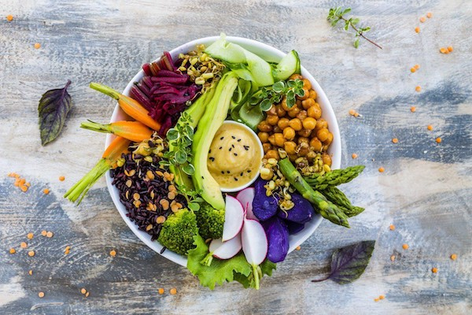
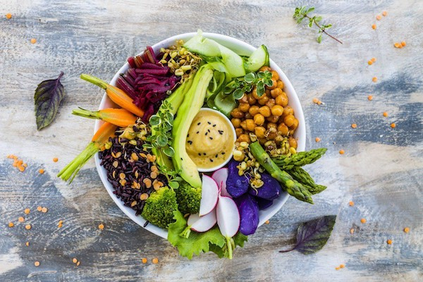

There are a number of 'external' factors—such as the people with whom you are enjoying a meal—that play a critical role in your ability to eat mindfully.
Focus on how your experience shifts moment to moment. Do you feel yourself getting full? Are you satisfied? Take your time, stay present and don't rush the experience.
Take a bite, and notice how it feels in your mouth. How would you describe the texture now? Try to identify all the ingredients, all the different flavors. Chew thoroughly and notice how you chew and what that feels like.
Put your utensils down between bites. Take time to consider how you feel—hungry, satiated—before picking up your utensils again. Listen to your stomach, not your plate. Know when you're full and stop eating.
Give gratitude and reflect on where this food came from, the plants or animals involved, and all the people it took to transport the food and bring it onto your plate. Being more mindful about the origins of our food can help us all make wiser and more sustainable choices.
Continue to eat slowly as you talk with your dining companions, paying close attention to your body's signals of fullness. If eating alone, try to stay present to the experience of consuming the food.
Be curious and make observations about yourself, as well as the food you're about to eat. Notice how you're sitting, sit with good posture but remain relaxed. Acknowledge your surroundings but learn to tune them out. Focusing on what's going on around you can distract you from the process of eating and take away from the mindfulness experience.
Employ all your senses while you're shopping, cooking, serving, and eating your food. How do different foods look, smell, and feel as you chop? How do they sound as they're being cooked? How do they taste as you eat?
Start by taking a few deep breaths and considering the health value of each different piece of food. While nutrition experts continually debate exactly which foods are "healthy" and which are not, the best rule of thumb is to eat food that is as close as possible to the way nature made it.
Use Hunger-Fullness Scale to listen to our internal cues when it comes to our hunger and fullness. Be mindful of the need of our stomach and choose to start eating when you feel enough hunger and stop eating when you are not hungery.
 
